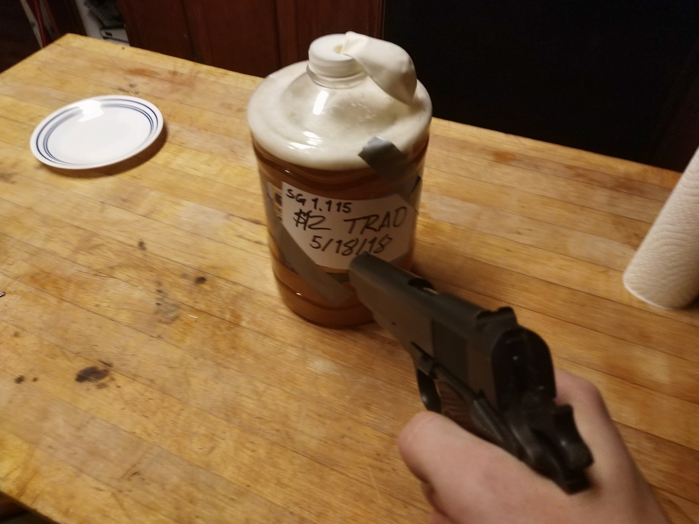

Recoil-Operated's $12 Traditional Mead

Description
(For HTML demonstration purposes, I'm including the recipe from this Tumblr post. I've formatted it and done some basic edits for grammar and clarity: it's much funnier in the original format.)
So one of the most common things I see on my mead posts is “I’d love to do that, but I don't have the stuff.”
Well, sit down and buckle up, because I'm about to show you how to make a $12.56 traditional mead.
Ingredients
- 1 gallon Deer Park/spring water. You don't want distilled.
- 3 lb or 32 fluid ounces honey.
- One packet of yeast.
- A party balloon.
Steps
- Put everything together on a clean work surface. You will need a clean glass, and while not entirely necessary, a measuring cup will be handy.
- Pour a cup of water for yourself and drink it. Hydration is important. Also, this will allow you headspace.
- Remove about a quart or so of water to drink later.
- Wash your drinking cup, and mix about a teaspoon of honey with some water.
- Add a packet of yeast to the honey water.
- Stick your bottle of honey into some hot water to warm it up.
- Go outside. Breathe the free air. Know what it is... to truly live.
- Enough of that, bitch. Honey's hot. Put it in the jug of water.
- Put some water in the jug of honey, too.
- Shake the sin out of it.
- Put that stuff (the water and honey in the honey bottle) back in the big bitch (the water jug).
- Shake the sh*t out of it.
- Hydrate yourself with the water you removed earlier.
- Shank a balloon with a pin.
- Add your yeasty honey water to the water jug.
- Balloon it. (Stretch the neck of the balloon and put it over the opening of the water jug.)
- Label it.
- If your trad mead says anything racist, or anything positive about Hitler, straighten that sh*t out. (See image at top.)
- Stick it somewhere dark and leave it alone for a a while. Shake the hell outta it once a day for the first four days. Then let it be until it's clear.
Home